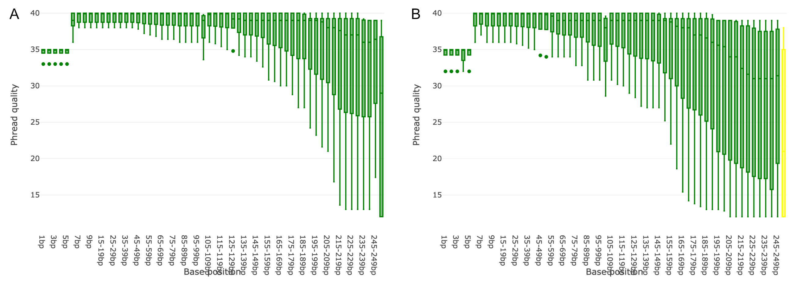
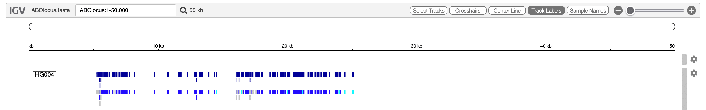

Pangenome variant calling with DeepVariant
| Author(s) |
|
OverviewQuestions:
Objectives:
How can reads be mapped to a pangenome?
How can DeepVariant be used to call variants?
Requirements:
Mapping reads to a pangenome
Calling variants with DeepVariant
- Introduction to Galaxy Analyses
- slides Slides: Quality Control
- tutorial Hands-on: Quality Control
- slides Slides: Mapping
- tutorial Hands-on: Mapping
- slides Slides: Introduction to Variant analysis
- tutorial Hands-on: Calling variants in non-diploid systems
- tutorial Hands-on: Pangenome analysis with Roary
Time estimation: 2 hoursLevel: Intermediate IntermediateSupporting Materials:Published: Sep 30, 2026Last modification: Sep 30, 2026License: Tutorial Content is licensed under Creative Commons Attribution 4.0 International License. The GTN Framework is licensed under MITversion Revision: 1
Pangenomes reduce the limitations associated with linear reference genomes, also known as reference bias, so more reads are mapped and fewer reads get discarded (Matthews et al. 2024). To learn more about pangenomics, please refer to this tutorial. Due to the increased natural genomic variation in pangenomes, reads can be mapped with an increased alignment accuracy, which in turn can improve downstream analysis (Liao et al. 2023).
In this tutorial, you will learn how to map reads to a small pangenome. As an example, we will be using a pangenome of the ABO blood group locus. The ABO locus encodes for ABO glycosyltransferases. These enzymes are encoded by three different alleles (A, B and O), where an individual’s blood type is determined by the inherited combination of them.
The linear human reference genome (GRCh38) contains the O allele at the ABO locus (see rs8176719). Due to the genetic variability in the ABO locus, mapping with traditional linear mappers is prone to errors, since reads from individuals with the A or B alleles may not be mapped properly. This leads to a lower alignment accuracy and may result in missed or incorrect variant calls. Therefore, using a pangenome overcomes this caveat by increasing the alignment accuracy.
The ABO locus pangenome used in this tutorial was built using the ABO locus reference from GRCh38 and small variants and haplotypes from the 1000 Genomes Project. The files were downloaded from the vg_wdl GitHub repository.
After mapping the reads to the pangenome, the resulting alignments will be used to call variants.
Agenda
Data upload
To start mapping reads to a pangenome and to call variants on the alignments, you will need the pangenome itself as well as the reads you want to map. Let’s import these data into Galaxy. They are available via Zenodo.
Hands On: Data upload
Create a new history for this tutorial. Give it a name like
Pangenome Calling.To create a new history simply click the new-history icon at the top of the history panel:
- Click on galaxy-pencil (Edit) next to the history name (which by default is “Unnamed history”)
- Type the new name
- Click on Save
- To cancel renaming, click the galaxy-undo “Cancel” button
If you do not have the galaxy-pencil (Edit) next to the history name (which can be the case if you are using an older version of Galaxy) do the following:
- Click on Unnamed history (or the current name of the history) (Click to rename history) at the top of your history panel
- Type the new name
- Press Enter
Import the following files from Zenodo.
https://zenodo.org/records/22640896/files/ABOlocus.gbz https://zenodo.org/records/22640896/files/HG004.hs37d5.2x250.abo.R1.trimmed.fastq.gz https://zenodo.org/records/22640896/files/HG004.hs37d5.2x250.abo.R2.trimmed.fastq.gz https://zenodo.org/records/22640896/files/path_list_file.txt
- Copy the link location
Click galaxy-upload Upload at the top of the activity panel
- Select galaxy-wf-edit Paste/Fetch Data
Paste the link(s) into the text field
Press Start
- Close the window


Checking data quality
In general, it is always good practice to assess the quality of your data before proceeding with analysis. For this we will use the tool Falco to check the quality of the reads.
Hands On: Checking data quality with Falco
- Run Falco ( Galaxy version 1.3.2+galaxy0) with the following parameters (leave everything else unchanged):
- param-files “Raw read data from your current history”:
HG004.hs37d5.2x250.abo.R1.trimmed.fastq.gzandHG004.hs37d5.2x250.abo.R2.trimmed.fastq.gz
Examine the output
Once Falco has finished, two new datasets for each input file will appear in your history. In total, you will find four datasets:
- 2x param-file Webpage file: The final HTML summary of the quality analysis.
- 2x param-file Raw data file: Raw data from Falco.
Investigate the HTML summary files to look at the read qualities. The data has generally good quality in this example:

Map reads to the pangenome
Now that we know that the quality of our data is good, we can continue to map the reads to the pangenome. For this, we will use the tool VG Giraffe, which is specialized to map reads to a pangenome in GBZ file format. Despite the complexity of mapping to a pangenome, VG Giraffe performs this task at a speed comparable to traditional linear mappers. VG Giraffe supports short-read mapping and can also be configured for long-read mapping.
Hands On: Map reads to the pangenome
- Run vg giraffe ( Galaxy version 1.73.0+galaxy0 ), select the following parameters (leave everything else unchanged):
- param-file “Graph to Map Against”: Select the
ABOlocus.gbzgraph- For “Input Reads”: Select
Read and align paired-end FASTQ/FASTA files (two files)in the dropdown
- param-file “Forward Reads”: Select
HG004.hs37d5.2x250.abo.R1.trimmed.fastq.gz- param-file “Reverse Reads”: Select
HG004.hs37d5.2x250.abo.R2.trimmed.fastq.gz- For “Output Format”: Select
SAMin the dropdown
- param-file “Reference Paths File”: Select the
path_list_file.txtfile to define the target paths present in the pangenome graph for surjection- For “Sample Name”: Enter
HG004in the text field- Expand the “Advanced Options”
- For “program_options args”: Enter
--prune-low-cplxin the text fieldComment: Surjection to SAM OutputNormally, VG Giraffe outputs the mapped reads in a graph-based alignment format like GAM (Graph Alignment Map) or GAF (Graph Alignment Format) which describe the aligned reads as paths through the graph.
However, many existing downstream analysis tools require known formats like SAM, BAM or CRAM. For this, VG Giraffe surjects the graph-based alignments to the linear reference coordinates by using the linear reference paths present in the pangenome graph (or a provided “Reference Paths File” to define the target paths, or a corresponding XG Graph if the paths of interest are absent in the pangenome graph). In doing so, the
--prune-low-cplxoption helps to avoid mapping errors and improve alignment quality in repetitive regions.Using a standard alignment format as the chosen output still provides the advantages of mapping to a pangenome as it reduces reference bias and leads to an overall improved alignment accuracy which is kept after surjection.
Examine the output
Once VG Giraffe has finished, the mapped reads will appear in your history as a SAM file. Have a look at the alignments.
Preparation for variant calling
Post-process alignments
After surjecting the graph-based alignments to the linear reference coordinates, paired reads may be too far apart (e.g., if there is a large deletion in the sample that is absent from the reference). If these are considered properly paired, they can be misinterpreted by downstream variant callers. To avoid false positive variants, we post-process the alignments in the SAM file so that read pairs are only declared “properly paired” if they have a maximum allowable fragment length. For this, we use the tool AWK, which is a tool that iterates over each line of a file and performs custom operations.
Hands On: Post-process Alignments
- Run Text reformatting ( Galaxy version 9.11+galaxy0), select the following parameters (leave everything else unchanged):
- param-file “File to process”: Select the SAM file output by VG Giraffe
- For “AWK Program”: Copy and enter the following code:
BEGIN { FS = "\t"; OFS = "\t"; } # Skip all header rows /^@/ { print; next; } # Compute over each record { # Get fragment length and make it absolute tlen = $9; if (tlen < 0) { tlen = -tlen; } # Adjust the Properly paired bit flag if set if (tlen > VAR1 && (int($2 / 2) % 2 == 1)) { $2 = $2 - 2; } print; }- For “Variables”: Click the
Insert Variablesbutton once so a new text field appears
- For “1: Variables”: Enter the value
3000. This value will be inserted for the VAR1 variable in the code above and represents the maximum allowable fragment length (in bp) for a read pair.
Once AWK has finished, the processed SAM file will appear in your history. Now, if any properly paired reads had a fragment length greater than our given maximum of 3000 bp, the corresponding bit flag is adjusted so they are no longer considered properly paired.
Convert SAM to BAM
The upcoming variant calling step requires the alignments to be in BAM format. For this, we will use the tool Samtools sort, which sorts the alignments by coordinates and automatically converts the SAM into a BAM file.
Hands On: Convert SAM to BAM
- Run Samtools sort ( Galaxy version 2.0.8), select the following parameters (leave everything else unchanged):
- param-file “BAM File”: Select the processed SAM file from the previous step
- For “Primary sort key”: Select
coordinatein the dropdown
Once Samtools sort has finished, a BAM file will appear in your history that will be used later on.
Export linear reference from pangenome
While the pangenome graph contains the genetic variation of many individuals or strains, downstream analysis tools, such as variant callers, still require a linear reference. Pangenome graphs in the GBZ format should have the sequences for the target paths which are used during surjection embedded in the graph itself. To export them, we will use the tool vg paths.
Note, that pangenome graphs in the GBZ format may not include all bases for the paths. In such cases, a custom FASTA file containing the sequences for the paths of interest can be used for calling variants. In this example, the ABOlocus.gbz graph contains the sequence of the ABO locus which we are interested in.
Hands On: Export Linear Reference
- Run vg paths ( Galaxy version 1.73.0+galaxy0), select the following parameters (leave everything else unchanged):
- param-file “Input Graph”: Select the
ABOlocus.gbzgraph- For “Path Selection”: Select
From filein the dropdown
- param-file “File with path names”: Select the
path_list_file.txtfile. This file targets that only the reference for the ABO locus should be exported.- For “Output Type”: Select
Path Datain the dropdown
- “Data Format”: Select
Paths in FASTA formatin the dropdown
Once vg paths has finished, the linear reference of ABOlocus will appear in your history. Have a look at the sequence.
Calling variants
Now that we have prepared our data, we are ready to call variants to identify genetic variations. For this, we will use the tool DeepVariant.
Hands On: Calling Variants
- Run DeepVariant ( Galaxy version 1.10.0+galaxy0), select the following parameters (leave everything else unchanged):
- For “Source for the reference genome”: Select
Use a genome from historyin the dropdown
- param-file “Reference genome”: Select the
ABOlocus.fafile- param-file “BAM File”: Select the sorted BAM file
- For “Sample name”: Enter
HG004in the text field- “Generate genomic VCF (gVCF) output”: Set the switch to
Yes- Expand the “Expert options”
- For “make_examples extra args”: Enter
normalize_reads=truein the text fieldComment: Improving AccuracyTo improve accuracy (Liao et al. 2023) with DeepVariant, left-aligning and realigning the reads helps. DeepVariant already realigns reads up to a maximum length of 500 bp by default. To enable left-aligning, we set
normalize_reads=trueduring DeepVariant’s make example step.
Examine the output
Once DeepVariant has finished, you will find two output files in your history:
- param-file VCF file: Contains records of genetic variations.
- param-file gVCF file: Contains records for all sites, whether there is a genetic variation or not.
The VCF file output can now be used for downstream analysis, such as visualisation, using IGV and the ABOlocus.fa as reference, annotation or filtering.

Re-run everything with a workflow
Rather than manually executing each tool shown in this tutorial again to map reads with VG Giraffe against a pangenome in GBZ file format, and to call variants with DeepVariant, you can use a workflow that has been published to WorkflowHub and the IWC Workflow Library to automate and run the tools sequentially. The workflow provides a more complex and customizable implementation with multiple optional parameters, allowing you to scale up your analysis. Read more on how to import the workflow to your Galaxy profile. Once the workflow is imported, you can run it with your own data.
- Click on galaxy-workflows-activity Workflows on the Activity Bar on the left.
- At the top of the resulting page you will have the option to switch between the My workflows, Workflows shared with me and Public workflows tabs.
- Select the tab you want to see all workflows in that category
Search for your desired workflow.
- Click on the workflow name: a pop-up window opens with a preview of the workflow.
- To run it directly: click workflow-run Run (top-right). This will take you to the workflow run form.
- Configure the workflow
- Send results to a new history: if enabled, will send the results to a new history instead of your current active history. You can provide a name for the new history here as well.
- Re-use jobs with identical parameters. This will check if any identical jobs have already been run before, and save compute time and energy by re-using the previous results. Great to use if you previously ran (part of) this workflow on the same data already.
Set the workflow parameters (e.g. input data)
Recommended: click Import (left of Run) to make your own local copy under Workflows / My Workflows.
- Click on workflow-run Run Workflow in the upper right corner to start the workflow.
- You will now see the workflow invocation page showing the progress of your workflow. This page can always be accessed via galaxy-panelview Workflow invocations on the Activity bar (left-hand menu).
- If you sent the results to a new history, you can view this history by clicking on the galaxy-histories-activity history link in the top left corner of the workflow invocation page.

Conclusion
This tutorial provided a step-by-step guide on how to map reads against an ABO locus pangenome using VG Giraffe and call variants using DeepVariant. By following these steps, you should be able to run the tools with your own data. For a more convenient way to run the tools sequentially, a workflow on the IWC Workflow Library is available that can be imported into your own Galaxy profile to run the tools automatically.
You've Finished the Tutorial
Key points
Pangenome mapping reduces reference bias and increases alignment accuracy
Surjection projects graph-based alignments to linear coordinates of a linear reference for compatibility with downstream tools
DeepVariant can be used to call variants using alignments and sequences from a pangenome
Frequently Asked Questions
Have questions about this tutorial? Have a look at the available FAQ pages and support channelsUseful literature
Further information, including links to documentation and original publications, regarding the tools, analysis techniques and the interpretation of results described in this tutorial can be found here.
References
- Liao, W.-W., M. Asri, J. Ebler, D. Doerr, M. Haukness et al., 2023 A draft human pangenome reference. Nature 617: 312–324. 10.1038/s41586-023-05896-x
- Matthews, C. A., N. S. Watson-Haigh, R. A. Burton, and A. E. Sheppard, 2024 A gentle introduction to pangenomics. Briefings in Bioinformatics 25: bbae588. 10.1093/bib/bbae588
Feedback
Did you use this material as an instructor? Feel free to give us feedback on how it went.
Did you use this material as a learner or student? Click the form below to leave feedback.

Citing this Tutorial
- Niklas Mayle, Saim Momin, Pangenome variant calling with DeepVariant (Galaxy Training Materials). https://training.galaxyproject.org/training-material/topics/variant-analysis/tutorials/pangenome-with-deepvariant/tutorial.html Online; accessed TODAY
- Hiltemann, Saskia, Rasche, Helena et al., 2023 Galaxy Training: A Powerful Framework for Teaching! PLOS Computational Biology 10.1371/journal.pcbi.1010752
- Batut et al., 2018 Community-Driven Data Analysis Training for Biology Cell Systems 10.1016/j.cels.2018.05.012
Congratulations on successfully completing this tutorial!@misc{variant-analysis-pangenome-with-deepvariant, author = "Niklas Mayle and Saim Momin", title = "Pangenome variant calling with DeepVariant (Galaxy Training Materials)", year = "", month = "", day = "", url = "\url{https://training.galaxyproject.org/training-material/topics/variant-analysis/tutorials/pangenome-with-deepvariant/tutorial.html}", note = "[Online; accessed TODAY]" } @article{Hiltemann_2023, doi = {10.1371/journal.pcbi.1010752}, url = {https://doi.org/10.1371%2Fjournal.pcbi.1010752}, year = 2023, month = {jan}, publisher = {Public Library of Science ({PLoS})}, volume = {19}, number = {1}, pages = {e1010752}, author = {Saskia Hiltemann and Helena Rasche and Simon Gladman and Hans-Rudolf Hotz and Delphine Larivi{\`{e}}re and Daniel Blankenberg and Pratik D. Jagtap and Thomas Wollmann and Anthony Bretaudeau and Nadia Gou{\'{e}} and Timothy J. Griffin and Coline Royaux and Yvan Le Bras and Subina Mehta and Anna Syme and Frederik Coppens and Bert Droesbeke and Nicola Soranzo and Wendi Bacon and Fotis Psomopoulos and Crist{\'{o}}bal Gallardo-Alba and John Davis and Melanie Christine Föll and Matthias Fahrner and Maria A. Doyle and Beatriz Serrano-Solano and Anne Claire Fouilloux and Peter van Heusden and Wolfgang Maier and Dave Clements and Florian Heyl and Björn Grüning and B{\'{e}}r{\'{e}}nice Batut and}, editor = {Francis Ouellette}, title = {Galaxy Training: A powerful framework for teaching!}, journal = {PLoS Comput Biol} }
You can use Ephemeris's
shed-tools installcommand to install the tools used in this tutorial.shed-tools install [-g GALAXY] [-a API_KEY] -t <(curl https://training.galaxyproject.org/training-material/api/topics/variant-analysis/tutorials/pangenome-with-deepvariant/tutorial.json | jq .admin_install_yaml -r)Alternatively you can copy and paste the following YAML
--- install_tool_dependencies: true install_repository_dependencies: true install_resolver_dependencies: true tools: - name: text_processing owner: bgruening revisions: 30b60202d990 tool_panel_section_label: Text Manipulation tool_shed_url: https://toolshed.g2.bx.psu.edu/ - name: samtools_sort owner: devteam revisions: 2ce517eb9af2 tool_panel_section_label: SAM/BAM tool_shed_url: https://toolshed.g2.bx.psu.edu/ - name: deepvariant owner: iuc revisions: 0a151b5f95e4 tool_panel_section_label: Variant Calling tool_shed_url: https://toolshed.g2.bx.psu.edu/ - name: falco owner: iuc revisions: 219ffa24f789 tool_panel_section_label: FASTA/FASTQ tool_shed_url: https://toolshed.g2.bx.psu.edu/ - name: vg_paths owner: iuc revisions: 7f622ac47f04 tool_panel_section_label: Annotation tool_shed_url: https://toolshed.g2.bx.psu.edu/